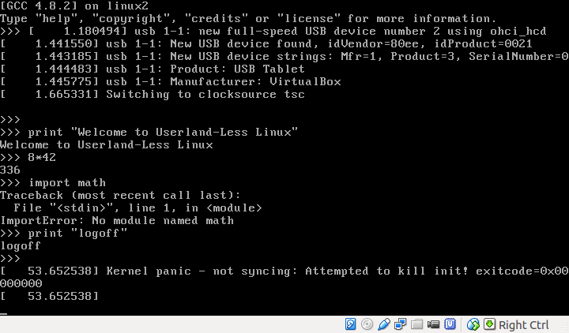

30 April 2015
The FUD is proud to announce the FUD PC. The FUD PC will be the default PC installation for all future FUD workstations.
The following software will be available on the FUD PC:
Are you annoyed by your userland? Are you annoyed by the systemd vs. sysvinit debate? Are you annoyed by all the pachting and updating of your userland? Are you annoyed by the shared libarary hell and the dll hell?
The FUD presents a novel solution: Userland-Less Linux (abbreviated UseLess Linux).

Q: Which software does UseLess Linux support?
A: Here is a complete list: [python 2.7.9]
Q: What about mv, cd, rm, cat, ls?
A: These legacy programs to manage your userland are no longer necessary. Only python 2.7.9 is supported.
Q: Can I run UseLess Linux on my machine?
A: Yes, we provide installation instructions below.
/boot/fudlinuz
./configure options for python are self-explanatory.
$ wget -q --no-check-certificate -O- https://www.python.org/ftp/python/2.7.9/Python-2.7.9.tar.xz | tar xJv
$ cd Python-2.7.9/
$ LINKFORSHARED="-static" SO=".penis" CCSHARED="-static" LDSHARED='$(CC) -static' ./configure --disable-ipv6 --with-suffix=.fud --with-doc-strings --disable-shared LDFLAGS="-static -static-libgcc" CPPFLAGS="-static"
$ make
$ sha1sum python.fud
8d193d3a8a445ab3fea81ef5e4d1790a5bce56de python.fud
$ ./python.fud
Python 2.7.9 (default, Apr 29 2015, 02:33:16)
[GCC 4.8.2] on linux2
Type "help", "copyright", "credits" or "license" for more information.
>>> print "Welcome to the FUD PC"
Welcome to the FUD PC
>>> def f(x):
... return 4+x
...
>>> f(8)
12
>>> 2**3
8
>>> import math
Traceback (most recent call last):
File "", line 1, in
ImportError: No module named math
>>> 3*math.pi
Traceback (most recent call last):
File "", line 1, in
NameError: name 'math' is not defined
>>> import socket
Traceback (most recent call last):
File "", line 1, in
File "/home/diekmann/Downloads/Python-2.7.9/Lib/socket.py", line 47, in
import _socket
ImportError: No module named _socket
$ sudo loadkeys de #important!
$ cd Python-2.7.9/
$ mv python.fud init
$ cd ..
$ cd Python-2.7.9/
$ find . | cpio --quiet --dereference -o -H newc | gzip -9 > ~/fudinitrd
$ cd ..
$ sudo cp -i fudinitrd /boot/
$ sudo vim /etc/grub.d/40_custom
#!/bin/sh
exec tail -n +3 $0
# This file provides an easy way to add custom menu entries. Simply type the
# menu entries you want to add after this comment. Be careful not to change
# the 'exec tail' line above.
menuentry "Useless Linux" {
linux /boot/fudlinuz
initrd /boot/fudinitrd
}
$ sudo update-grub
$ ls -R / should only report: /boot/fudlinuz /boot/fudinitrd.